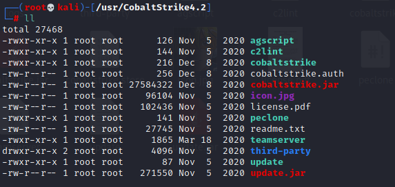

# 简介
Cobalt Strike 是一款内网渗透测试工具，常被业界人称为 CS。Cobalt Strike 2.0 版本主要是结合 Metasploit 可以称为图形化 MSF 工具。而 Cobalt Strike 3.0 已经不再使用 Metasploit 框架而作为一个独立的平台使用，它分为客户端与服务端，服务端是一个，客户端可以有多个，可被团队进行分布式协团操作。客户端模式和服务端模式可以在 Windows 以及 Linux 上运行。
Cobalt Strike 集成了端口转发、服务扫描，自动化溢出，多模式端口监听，win exe 木马生成，win dll 木马生成，java 木马生成，office 宏病毒生成，木马捆绑；钓鱼攻击包括：站点克隆，目标信息获取，java 执行，浏览器自动攻击等等
# 安装 CobaltStrike
有能力的可以支持一下正版 Cobalt Strike 官网: https://www.cobaltstrike.com。
没有能力我们就用学 (po) 习 (jie) 版。
链接：https://pan.baidu.com/s/1fb1pSNfFUacOhqVT9oplhA
提取码：rolr
这个是 Linux 版本
下载解压后文件如下：

# 目录结构
│ cobaltstrike.jar 【主体程序、客户端启动程序】
│ teamserver 【Linux服务端启动程序(linux shell脚本)】
|─third-party 第三方工具 【vnc远程功能的dll】
| README.vncdll.txt
| winvnc.x64.dll 【vnc服务端dllx64位】
| winvnc.x86.dll 【vnc服务端dllx86位】
│ agscript 【拓展应用的脚本】
│ c2lint 【检查c2配置文件的语法和预览】
| peclone 【用来解析dll】
# 客户端与服务端的连接
Cobalt Strike 使用 C/S 架构，Cobalt Strike 的客户端连接到团队服务器，团队服务器连接到目标，也就是说 Cobalt Strike 的客户端不与目标服务器进行交互。
# 启动服务端
cobaltstrike.jar 既是服务端程序也是客户端程序，一般情况 Linux 用 teamserver 启动服务端。
teamserver <host> <password> [/path/to/c2.profile] [YYYY-MM-DD]
<host> is the (default) IP address of this Cobalt Strike team server
<password> is the shared password to connect to this server
[/path/to/c2.profile] is your Malleable C2 profile
[YYYY-MM-DD] is a kill date for Beacon payloads run from this server
第一个参数为服务器监听 IP 地址 此选项为必填选项
第二个参数为服务器连接密码客户端使用此密码连接服务器 此选项为必填选项
第三个参数为 Malleable C2 profile 配置文件如果不使用可以不用填写 此选项为可选选项
这是开源的 Malleable C2 profile 文件 https://github.com/rsmudge/Malleable-C2-Profiles
第四个参数为 Beacon 有效负载运行结束日期。如果设置此选项则 CS 生成的每个 Beacon stage 中都将嵌入此结束日期，Beacon payload 在此日期后将拒绝运行，处于 sleep 状态的 Beacon payload 醒来后也将自动退出结束运行 此选项为可选选项
例:
# 启动客户端
使用此命令可以直接运行
java -Dfile.encoding=UTF-8 -XX:ParallelGCThreads=4 -XX:+AggressiveHeap -XX:+UseParallelGC -jar cobaltstrike.jar
为了方便我们把这句话保存在 start.sh 的 shell 脚本里面。
当 Cobalt Strike 客户端启动时，你会看到一个连接对话框
输入主机 ip，连接端口 (默认 50050)，以及你想使用的用户名和服务端启动时设置的密码然后点击连接就可以连接到服务器了。
点击 Connect 连接后，会有个提示信息，如果承认提示信息中的哈希值就是所要连接团队服务器的哈希值就点击 Yes，随后即可打开 CS 客户端界面
在连接后，团队之间就可以通过客户端进行沟通，信息共享。